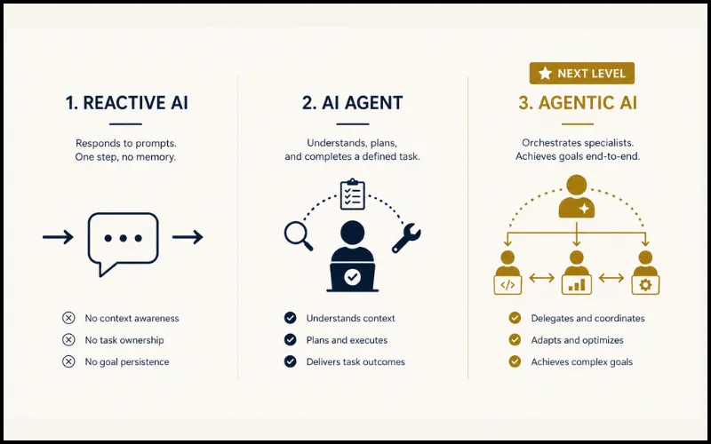

You have used AI as a tool — you type, it responds, done. That has been the model since ChatGPT arrived and it has been genuinely useful. But a more significant shift is now underway. AI is moving from something you talk to into something that works for you — autonomously, across multiple systems, without needing approval for every step. That shift has a name: agentic AI. And in 2026, it has crossed from research papers into real enterprise deployments, consumer tools, and daily workflows.
Agentic AI refers to AI systems that pursue goals autonomously — planning, making decisions, using tools, and completing multi-step tasks without constant human input. Unlike a chatbot that responds to one prompt at a time, agentic AI breaks a goal into steps, decides how to achieve each one, and adapts when something changes. An AI agent is a single task-specific system (one job, one goal). Agentic AI is the broader system that orchestrates multiple agents toward a larger outcome. In 2026, agentic AI is already deployed in banking, healthcare, and enterprise software — and early versions are accessible to everyday users through tools like Google Gemini, Microsoft Copilot, and Claude.
Most people's mental model of AI is still a chatbot — one input, one output, human in the loop at every step. That model is already being replaced. The organisations building the next generation of AI products are not asking "how do we make it answer better?" They are asking "how do we make it act more reliably?" The answer is agentic systems — and understanding what they are, what they can and cannot do, and where the risks lie is now a genuinely useful piece of knowledge for anyone who works with technology.
1 What Is Agentic AI — and How Is It Different From ChatGPT?
The clearest way to understand agentic AI is through three distinct levels of what AI can do — because most confusion comes from treating these as the same thing.
One input, one output. The AI has no memory of prior conversations, takes no action in the world, and stops the moment the conversation ends. Genuinely useful for answering questions, drafting content, explaining concepts. The human drives every step.
An AI agent takes a defined goal, breaks it into steps, uses tools (search the web, query a database, send an email, write and run code), and completes the task without human approval at each micro-step. One agent, one well-defined job. A customer support agent that receives a query, looks up the account, checks policy, and sends a resolution — without a human touching it.
Multiple agents working together under an orchestrating system that sets goals, assigns tasks to the right agents, monitors progress, and adapts when something unexpected happens. This is the real shift — from AI that answers questions to AI that pursues outcomes. The orchestrator does not do the work itself; it decides which specialist agents to deploy and in what sequence, then assembles their outputs into a result.
A chatbot is a very good answering machine. An AI agent is a specialist who completes a defined task. Agentic AI is a coordinator that manages a team of specialists toward a goal you set. The difference is not intelligence — it is agency: who initiates, who decides, and who adapts when things change.

2 What Does Agentic AI Actually Look Like? Real Examples.
Abstract definitions only go so far. Here is what agentic AI looks like in practice — first in industry deployments that already exist, then in everyday tools that anyone can use.
Industry Deployments
An agentic system detects an unusual transaction, pauses it, cross-references the customer's transaction history, notifies the customer via app, initiates a verification workflow, and logs the event for compliance — all before a human is ever involved. What used to take a fraud analyst 20 minutes now happens in seconds.
An agent continuously monitors wearable data, flags an anomaly in heart rate variability, cross-references the patient's medication schedule, and sends the doctor a structured summary with relevant history — before the patient even notices something might be wrong. Early warning, contextualised, delivered automatically.
A return request arrives. An agent checks the order history, verifies eligibility against policy, processes the refund, updates inventory, triggers a replacement shipment, and sends a confirmation email — a workflow that used to cross three departments now completes in under a minute.
Unusual network behaviour is detected. An agent traces it, identifies the affected system, isolates it from the network, begins a counter-response, and generates an incident report — compressing what used to be a multi-hour human investigation. Research shows agentic systems can respond to threats 100x faster than human-only workflows.
Everyday User Examples
Email triage: An agent reads your inbox overnight, drafts replies to routine messages, flags the two that genuinely need your attention, and moves everything else to the right folder. You wake up to a manageable inbox — without touching a single email yourself.
Research: You ask for a briefing on a topic. The agent searches multiple sources, reads them, extracts the relevant points, cross-checks for contradictions, and delivers a structured summary — in the time it would take you to open your third tab.
Travel planning: Give it a destination and dates. It checks flights, compares hotels against your stated preferences, reads recent reviews, proposes an itinerary, and holds a reservation — returning with a complete plan, not a list of links for you to work through.
Health tracking: Your wearable data feeds an agent that notices your sleep quality has dropped over two weeks, correlates it with your calendar (late meetings, high-stress periods), and suggests specific schedule adjustments — not generic advice, but tailored to your actual pattern.
Content creation: Brief it on a topic. It researches, drafts, formats for each platform, schedules posts, and reports back on what performed — a complete publishing workflow compressed into one instruction.
"Agentic AI is not about replacing human judgment on the decisions that matter. It is about removing humans from the decisions that don't — freeing attention for the work that actually requires it."
— Emerging consensus across enterprise AI deployments, 2026
3 Who Is Building Agentic AI — and What Should You Know?
The landscape has moved fast. Every major AI company has an agentic strategy, and several no-code platforms now let non-technical users build agent workflows without writing a single line of code.
OpenAI's Operator product lets agents browse the web, fill forms, and complete purchases on your behalf. Already live in the US and expanding globally through 2026. GPT-4o with tool use is the underlying engine — the same model that powers ChatGPT, now given hands to act in the world rather than just a voice to respond.
Google's Gemini is deeply embedded in Workspace — Docs, Gmail, Calendar, Drive — enabling agents that move across tools rather than being confined to one app. The advantage: your data is already there. An agent can read your emails, check your calendar, update a document, and schedule a meeting in one continuous workflow.
Copilot Studio allows enterprises to build custom agents that work inside Teams, Outlook, SharePoint, and enterprise databases. JPMorgan Chase — which allocated $19.8 billion to AI in 2026 — is building on platforms like this. AI is projected to generate $2.5 billion in annual value for the bank through efficiency gains and revenue growth.
Claude's tool-use and computer-use capabilities allow agents to browse, write and execute code, manage files, and interact with software interfaces. Claude Code — Anthropic's command-line agentic coding tool — is the most direct expression of this: an agent that takes a coding goal and handles the entire implementation autonomously. Anthropic's focus on safety makes Claude particularly suited to agentic tasks where the consequences of errors matter.
For non-technical users, these platforms provide visual interfaces to build multi-step agent workflows. Connect your email, calendar, CRM, and other tools — then define what the agent should do when certain conditions are met. No programming required. The barrier to building your first agent is now the same as setting up a spreadsheet formula.
4 The Real Risks Nobody Talks About
Agentic AI is genuinely powerful — which means the risks are also genuinely significant. Understanding them is not pessimism; it is the prerequisite for using the technology well.
When an agent is operating autonomously across multiple systems, knowing when to intervene becomes genuinely difficult. Most current agentic systems have poor human-in-the-loop design — they either ask for approval too often (defeating the purpose) or too rarely (losing meaningful oversight). Getting this balance right is one of the hardest open problems in agentic AI deployment.
Security: An agent with access to your email, calendar, files, and financial accounts is a high-value target. A compromised agent has far more reach than a compromised password — it can act, not just read. Treat agent permissions with the same seriousness you would treat banking credentials.
The speed of mistakes: A human making a wrong decision affects one step. An agentic system propagating a wrong decision can affect twenty downstream actions before anyone notices. Errors in agentic systems compound faster than human errors in equivalent workflows.
Data and privacy: Agents need context to be useful — which means they need access to your data. Most people have not thought carefully about what they are granting access to, where that data is processed, or who can see it. Read the permissions before connecting your tools.
The vision gap: 73% of teams report a gap between what they planned to build with agentic AI and what actually works reliably in production. The technology is real but maturing — a polished demo and a reliable production system are still very different things in 2026.
Agentic AI is most powerful when the stakes of individual decisions are low and the volume is high — email triage, data processing, research summarisation. It is most dangerous when given authority over high-stakes, irreversible decisions without adequate human review. Design the guardrails before you deploy the capability.
5 How to Start Using Agentic AI Today — Without Being a Developer
Most people assume agentic AI requires technical expertise to use. It does not — at least not at the level now available to consumers. Here is a practical starting framework.
Email triage, weekly research summaries, meeting prep notes, expense categorisation. Do not try to automate everything at once. Start with one workflow you do repeatedly, where the stakes of an individual mistake are low and the volume is high enough that automation actually saves meaningful time.
Google Gemini in Gmail, Copilot in Outlook, or Claude with Projects enabled. Most people already have access to early agentic features without paying extra. Before buying a new tool, check what the tools you already use can now do — the gap between what people know their tools can do and what those tools are actually capable of is enormous in 2026.
Agents are only as useful as the context you provide. Tell it your preferences, your usual patterns, your constraints, your audience. The more it understands about your workflow, the more useful it becomes. A generic agent is a generic tool. A contextualised agent is a personalised one.
Let agents handle the first pass, the research, the draft, the routine. Keep final decisions — anything financial, anything sent externally, anything irreversible — with a human. This is not a limitation to overcome; it is good design. The goal is to remove yourself from decisions that do not need you, not from all decisions.
The first workflow you automate will need refinement. Expect two or three iterations before it genuinely saves time reliably. This is normal — it reflects how all new tools work, not a flaw in agentic AI specifically. The organisations getting the most value are the ones who treat it as a system to build, not a button to press.
The Shift From User to Director
The shift from AI that answers to AI that acts is not a distant future — it is the transition happening right now, in enterprise software, in consumer tools, in the infrastructure of banks, hospitals, and logistics companies. Most people are still in the ChatGPT mental model: prompt, response, done. The next mental model is different — brief the agent, set the guardrails, come back to results.
That shift, from being a user of AI to being a director of AI, is the real change agentic AI brings. It is powerful, it is already here in early form, and it rewards people who understand it earliest. The organisations and individuals who grasp this now — who start with one workflow, learn what works, and build from there — will operate at a different level of leverage within the next two years. Stay curious: the age of AI that acts has begun, and you do not need to be a developer to be part of it.
Agentic AI is an AI system that pursues goals autonomously — planning, making decisions, using tools, and completing multi-step tasks without needing a human to approve every step. Unlike a chatbot that responds to one prompt at a time, agentic AI breaks a goal into steps, decides how to achieve each one, and adapts when something changes mid-task. Think of it as the difference between asking an AI a question and giving an AI a goal to accomplish.
An AI agent is a single, task-specific system built to do one defined job — book a meeting, monitor a server, answer a support query. Agentic AI is the broader system that orchestrates multiple agents, sets goals, sequences their actions, and adapts the plan when things change. AI agents are the workers; agentic AI is the system that manages and coordinates them toward a larger outcome.
Agentic AI is safe when deployed with appropriate guardrails — clear boundaries on what the system can and cannot do autonomously, human oversight on high-stakes decisions, and transparent logging of actions taken. The risks come from granting agents access to irreversible or high-consequence actions without adequate review. Best practice is to start with low-stakes, high-volume tasks and keep final decisions on anything financial, external, or irreversible with a human.
For everyday users, the most accessible agentic AI tools in 2026 include Google Gemini integrated into Gmail and Workspace, Microsoft Copilot in Outlook and Teams, Claude with Projects and tool use enabled, and OpenAI's Operator for web-based tasks. For no-code workflow automation, Zapier AI and Lindy allow users to build multi-step agent workflows without any coding. Most of these are available on existing subscriptions without additional cost.
Traditional automation tools like Zapier follow fixed, pre-programmed rules — if X happens, do Y. They break when something unexpected occurs and require a human to fix the workflow. Agentic AI, by contrast, can reason about unexpected situations, decide on an alternative approach, and continue toward the goal without breaking. The key difference is adaptability: automation follows a script; agentic AI pursues an outcome and figures out how to get there.